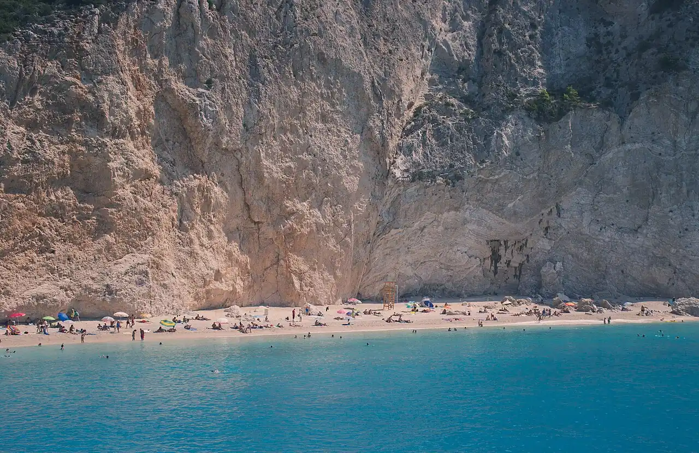

Porto Katsiki
Lefkada, Grèce · baignade

Plage de sable et de galets au pied de hautes falaises blanches, au sud-ouest de Lefkada. On y descend par un long escalier ou on y arrive en bateau depuis Nydri et Vassiliki.
- Lieu
- Lefkada, Grèce
- Niveau
- Intermédiaire
- Activités
- baignade
- Type d'eau
- Mer / océan
- Coordonnées
- 38.60, 20.55 (position approximative du secteur)
Dangers à connaître
- Éboulements possibles : ne t’installe pas au pied des falaises.
- Vagues et fond qui descend vite par vent de nord-ouest.
Le conseil d'Ocean Buddy
Arrive tôt : le parking et la plage sont vite saturés en été.
Ouvrir dans Ocean Buddy Télécharger sur l'App Store
Source : Fiche Ocean Buddy · septembre 2026 · à vérifier localement.